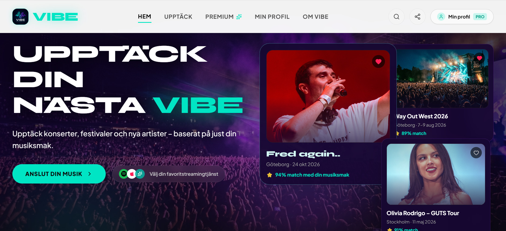

Grupparbete · WebbprototypVIBE
Kurs: AI och tech · IHMEtt fiktivt koncept för en AI-driven plattform som hjälper användare att upptäcka konserter, festivaler och nya artister utifrån sin musiksmak.
I projektet tog vi fram affärsidén, gjorde en marknadsanalys och tog fram sitemap och wireframe. Med hjälp av AI skapade vi sedan en webbprototyp i Google AI Studio.
AI & Tech
Google AI Studio
Marknadsanalys
Wireframe